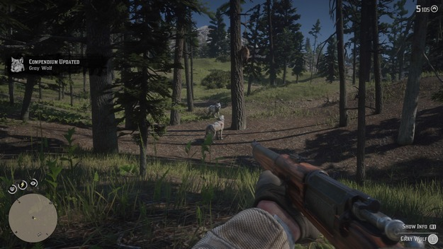

Red Dead redemption 2

Tijekom jedne razmjene lovačkih priča i sitnih mudrosti u Red Dead Redemptionu 2 može
se čuti upečatljiva misao koja glasi:
„You don’t get to live a bad life and have good things happen to you.“
Ta je poruka možda na tragu istine, ali virtualni svijet ove igre dopušta
upravo suprotno. U njemu vodite život prožet nasiljem i nanošenjem štete,
a istovremeno vam se događaju dobre stvari...
Pročitajte više
Zoran Žalac 25.10.2018.
Forza Horizon 4
Neki će reći kako nema toga što već nismo vidjeli u igrama arkadnog utrkivanja.
U Burnoutu smo ciljano izazivali sudare,
u Need for Speedu smo bježali policiji, u Test Drive Unlimitedu kupovali kuće,
a u Driver: San Franciscu telepatski otimali automobile.
Međutim, Forza Horizon 4 dokazuje nam kako nisu sve ideje iskorištene u
ovom žanru.Glavni adut i najveća specifičnost Forze Horizon 4
jest utrkivanje kroz...
Pročitajte više
Zoran Žalac 12.10.2018.
Call of Duty: Black Ops 4
Call of Duty: Black Ops 4 ima pedantno krojen multiplayer s osam modova i 14 mapa,
potpuno novi battle royale mod zvan Blackout s
najvećom mapom koju je serijal ikada vidio, kao i najrazvijeniji co-op mod sa
zombijima do sada. Ali nema dušu. Zabavan je, pun sadržaja i tehnički
funkcionira praktički bez greške...
Pročitajte više
Igor Belan 25.10.2018.